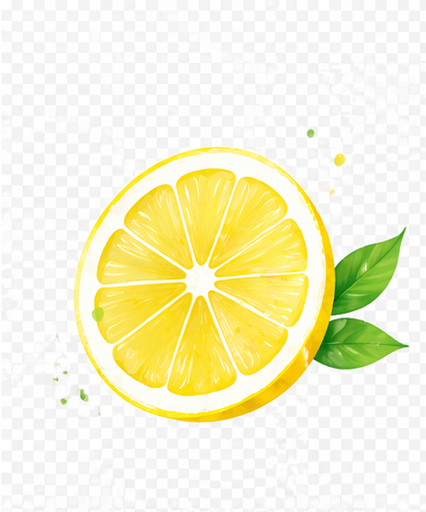

Спасибо
Готово. Вы уже внутри
Я отправила вам разбор на почту.
Но самое важное — сейчас не там.
Основная часть проходит в чате.
Там я разбираю:
- почему не держится результат
- где происходят срывы
- и как выстроить питание без жёстких диет
Если вы пропустите этот шаг —
останется только теория.
Можно просто зайти и посмотреть.
Без обязательств.
В чате уже сейчас:
- участницы делятся своими ситуациями
- идут живые разборы
- и многие впервые понимают, что с ними происходит